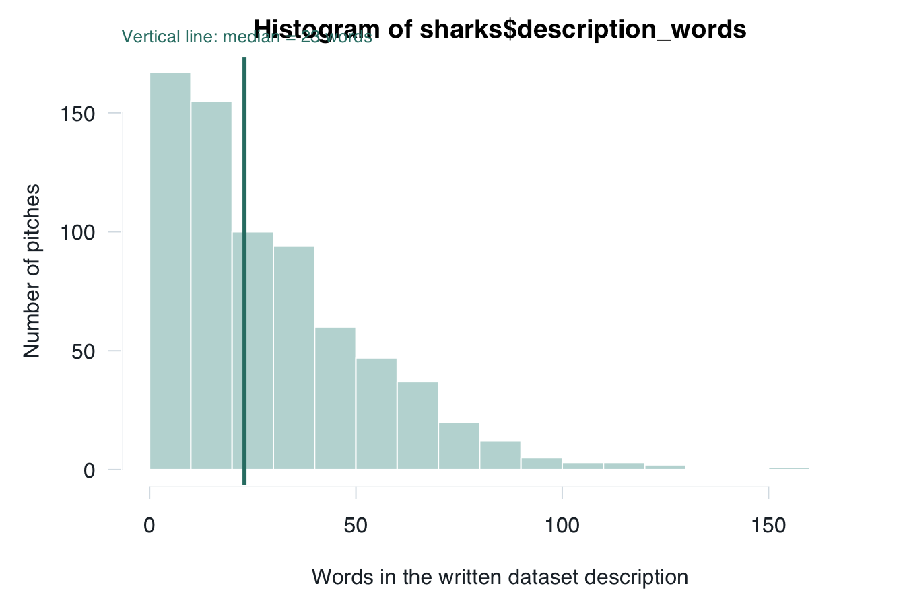
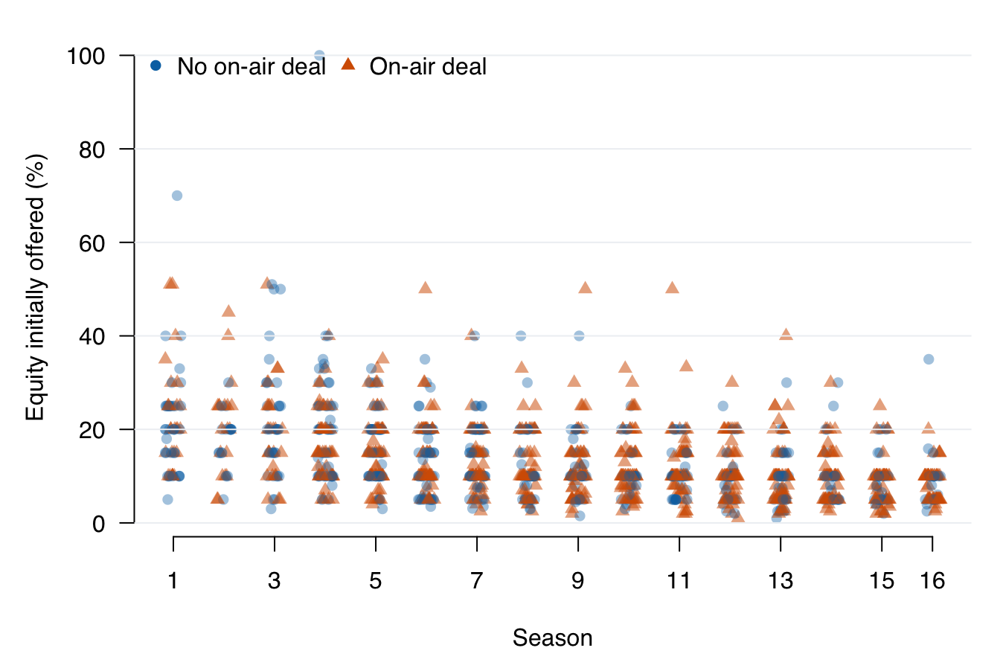
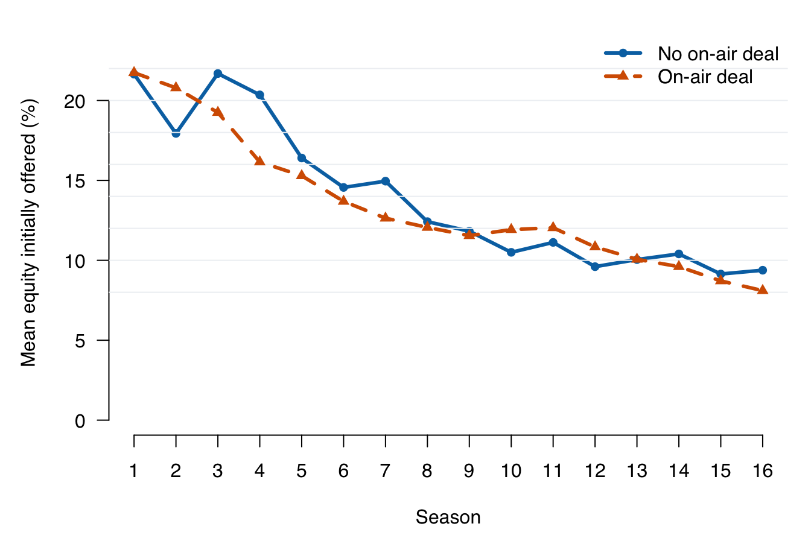

Lecture 1: Introduction to Data Analysis
- organise a reproducible R analysis and verify AI-assisted work;
- distinguish categorical, discrete, continuous, and identifier variables;
- identify a sample, a target population, sampling variability, and selection bias;
- inspect, validate, summarise, visualise, and qualify a real dataset.
Before class
Allow about 30 minutes for this preparation.
If percentages, units, or graph axes are unfamiliar, review Mathematics Refresher: numbers, percentages, and graphs.
- Read How to use this book and locate the sections called Before class, In class, and After class.
- Open RStudio through an R project. Create a new script and save it before writing code.
- Download
shark_tank_teaching.csvand place it in a folder calleddatainside your project. Keep the downloaded file unchanged. - Run the following commands and bring the output to class.
## [1] 1441 19## [1] "pitch_id" "startup_name"
## [3] "season" "episode"
## [5] "industry" "business_description"
## [7] "description_words" "pitcher_gender_group"
## [9] "women_represented" "multiple_entrepreneurs"
## [11] "pitcher_state" "ask_amount_usd"
## [13] "equity_offered_pct" "requested_valuation_usd"
## [15] "deal_on_show" "deal_amount_usd"
## [17] "deal_equity_pct" "deal_valuation_usd"
## [19] "number_sharks_in_deal"head(
sharks[c(
"pitch_id", "startup_name", "season", "industry",
"pitcher_gender_group", "deal_on_show"
)],
3
)## pitch_id startup_name season industry pitcher_gender_group
## 1 1 AvaTheElephant 1 Health/Wellness all_women
## 2 2 MrTod'sPieFactory 1 Food and Beverage all_men
## 3 3 Wispots 1 Business Services all_men
## deal_on_show
## 1 1
## 2 1
## 3 0Write one sentence answering: What do you think one row in the dataset represents? It is fine if your answer changes during the lecture.
Check your answer
One row represents one recorded televised pitch from Seasons 1–16 of Shark Tank US.
R reactivation
You used scripts, CSV files, data frames, summaries, and plots in
Programming for E&BI.
If the commands above feel unfamiliar, revisit its chapters on
R scripts,
reading CSV files, and
summarising data frames.
In class
1. How the course works
Every lecture uses the same rhythm:
- Prepare before class. Encounter the question, notation, data, or short explanation before the lecture.
- Participate during class. Predict results, discuss choices, run code, and revise your reasoning with the teaching team.
- Practise after class. Retrieve ideas from memory, reproduce the analysis, and explain results without copying a model answer.
- Use the exam preparation sessions. Bring your attempts and questions; work in groups with classmates and teaching assistants.
Complete the Before class section before each lecture; use After class to check that you can reproduce and explain the analysis independently.
2. Data analysis with R and AI
R reactivation
A reproducible script recreates the analysis in a new R session, without depending on objects created earlier at the Console.
Use these habits from the start:
- open the project rather than changing the working directory with
setwd(); - keep downloaded data unchanged;
- use relative paths such as
data/shark_tank_teaching.csv; - record importing, checking, transforming, plotting, and modelling in scripts;
- give objects meaningful names;
- keep code and written interpretation together; and
- restart R and run the complete script before sharing the analysis.
The analysis cycle
Data analysis is iterative:
- Ask a focused question.
- Define the unit and decide how each idea will be measured.
- Obtain or create the data and document their provenance.
- Inspect and validate before calculating.
- Summarise and visualise patterns.
- Interpret the result in context and state its limits.
Use AI as a fallible assistant
AI systems generate plausible responses; they do not certify that a calculation, source, or interpretation is correct. Use:
Attempt -> Ask -> Verify -> Explain
- Attempt the question and identify where you are stuck.
- Ask for a hint, diagnostic question, counterexample, or code review.
- Verify every claim against the data, R output, course notation, and reliable sources.
- Explain the result in your own words and ask for feedback on that explanation.
Do not share confidential, personal, or assessment-restricted material. You remain responsible for every submitted claim.
3. In-class data collection exercise
The class will create its first dataset through an anonymous Mentimeter activity.
A choice with money at risk
Imagine receiving EUR 100 and making one choice:
| Choice | Amount placed at risk | Possible final amounts |
|---|---|---|
| Keep it | EUR 0 | EUR 100 for certain |
| Split it | EUR 50 | EUR 50 or EUR 150, each with 50% chance |
| Go all-in | EUR 100 | EUR 0 or EUR 200, each with 50% chance |
All three choices have the same average monetary payoff across many repetitions: EUR 100. The options differ in how uncertain the one-time result is.
Next, answer:
How do you see yourself in general? Use 0 for “not at all willing to take risks” and 10 for “very willing to take risks.”
Finally, give your current belief:
What is the probability that you will start or co-found a business at least once during the next ten years?
The class map places general risk willingness on the horizontal axis and the subjective founder probability on the vertical axis. One anonymous point represents one responding student.
From ideas to variables
| Variable | What is recorded | Type |
|---|---|---|
respondent_id |
anonymous row label | identifier |
amount_at_risk |
0, 50, or 100 euros | discrete quantitative |
risk_willingness |
one selected point from 0 to 10 | ordered discrete rating |
founder_probability |
belief from 0% to 100% | continuous concept recorded on a finite-precision slider |
Risk attitude is a theoretical construct. The monetary choice and the 0-10 response are two imperfect measurements of it. They may disagree because risk taking depends on context, hypothetical choices differ from real stakes, and self-perceptions are imperfect. A single response is not a diagnosis of a permanent personality type.
The first two responses offer separate allowable points. Founder probability is conceptualised on the continuum from 0% to 100%, although the software stores a rounded value.
Sample and target population
The sample consists of students who are present and respond. Plausible target populations include:
- the responding students;
- everyone attending this lecture;
- all students enrolled in QM Basic;
- all first-year business students in the Netherlands; or
- all young adults in the Netherlands.
The data describe the respondents. They do not automatically represent wider groups because attendance and participation are not random.
Two uncertainties must not be confused:
- Sampling variability: even a genuinely random sample can contain an unusual number of highly risk-tolerant students by chance. Larger random samples usually reduce this chance variation.
- Selection bias: a convenience sample can systematically exclude certain people. Collecting more responses from the same selected group does not necessarily repair that bias.
A probability sample of Dutch students would require a defined population, a suitable sampling frame, and random selection. Non-response and measurement error could still remain.
4. Analyse the Shark Tank data
Context and unit of observation
Shark Tank US is a television programme in which entrepreneurs present a venture or product to a panel of investors known as sharks. Entrepreneurs may ask for money in exchange for an ownership share. The investors question them, negotiate, and may announce a deal during the episode.
The recorded outcome is an on-air agreement. It does not establish that an investment was completed or that the venture later succeeded.
The teaching file contains 1,441 televised pitches from completed Seasons 1–16 and 19 variables. The table below introduces the variables used most often in this course.
| Variable | Meaning | Type |
|---|---|---|
pitch_id |
row identifier | identifier |
startup_name |
venture or product name | categorical label |
deal_on_show |
1 for an on-air agreement; 0 otherwise | binary categorical, stored as 0/1 |
season |
television season, 1-16 | ordered discrete/time index |
episode |
episode number within season | discrete identifier within season |
industry |
source industry category | categorical |
description_words |
words in the written dataset description | discrete quantitative count |
pitcher_gender_group |
all_women, all_men, mixed, or unknown, based on the source classification |
categorical |
women_represented |
1 for all_women or mixed; 0 for all_men; missing for unknown |
binary categorical, stored as 0/1 |
multiple_entrepreneurs |
source indicator for more than one entrepreneur | binary categorical, with missing values |
ask_amount_usd |
amount requested | quantitative, USD |
equity_offered_pct |
ownership percentage initially offered | quantitative, percentage points |
requested_valuation_usd |
valuation implied by the initial ask | quantitative, USD |
deal_amount_usd, deal_equity_pct, deal_valuation_usd |
recorded deal terms | quantitative; structurally missing without a deal |
Gender describes the people presenting the pitch, not necessarily every founder
or employee. women_represented is not the share of women: the source does not
report the presenter counts needed to calculate that share for mixed teams.
Names were not used to infer gender. The file does not measure the spoken pitch,
completed investment, or later venture performance.
Inspect and validate
## [1] 1441 19## [1] "pitch_id" "startup_name"
## [3] "season" "episode"
## [5] "industry" "business_description"
## [7] "description_words" "pitcher_gender_group"
## [9] "women_represented" "multiple_entrepreneurs"
## [11] "pitcher_state" "ask_amount_usd"
## [13] "equity_offered_pct" "requested_valuation_usd"
## [15] "deal_on_show" "deal_amount_usd"
## [17] "deal_equity_pct" "deal_valuation_usd"
## [19] "number_sharks_in_deal"## pitch_id startup_name season episode industry
## 1 1 AvaTheElephant 1 1 Health/Wellness
## 2 2 MrTod'sPieFactory 1 1 Food and Beverage
## 3 3 Wispots 1 1 Business Services
## 4 4 CollegeFoxesPackingBoxes 1 1 Lifestyle/Home
## business_description description_words
## 1 Ava The Elephant - Baby and Child Care 8
## 2 Mr. Tod's Pie Factory - Specialty Food 7
## 3 Wispots - Consumer Services 4
## 4 College Foxes Packing Boxes - Consumer Services 7
## pitcher_gender_group women_represented multiple_entrepreneurs pitcher_state
## 1 all_women 1 0 GA
## 2 all_men 0 0 NJ
## 3 all_men 0 0 NC
## 4 all_men 0 0 FL
## ask_amount_usd equity_offered_pct requested_valuation_usd deal_on_show
## 1 50000 15 333333 1
## 2 460000 10 4600000 1
## 3 1200000 10 12000000 0
## 4 250000 25 1000000 0
## deal_amount_usd deal_equity_pct deal_valuation_usd number_sharks_in_deal
## 1 50000 55 90909 1
## 2 460000 50 920000 2
## 3 NA NA NA NA
## 4 NA NA NA NA## 'data.frame': 1441 obs. of 19 variables:
## $ pitch_id : int 1 2 3 4 5 6 7 8 9 10 ...
## $ startup_name : chr "AvaTheElephant" "MrTod'sPieFactory" "Wispots" "CollegeFoxesPackingBoxes" ...
## $ season : int 1 1 1 1 1 1 1 1 1 1 ...
## $ episode : int 1 1 1 1 1 2 2 2 2 2 ...
## $ industry : chr "Health/Wellness" "Food and Beverage" "Business Services" "Lifestyle/Home" ...
## $ business_description : chr "Ava The Elephant - Baby and Child Care" "Mr. Tod's Pie Factory - Specialty Food" "Wispots - Consumer Services" "College Foxes Packing Boxes - Consumer Services" ...
## $ description_words : int 8 7 4 7 4 6 4 3 7 6 ...
## $ pitcher_gender_group : chr "all_women" "all_men" "all_men" "all_men" ...
## $ women_represented : int 1 0 0 0 0 1 0 0 0 1 ...
## $ multiple_entrepreneurs : int 0 0 0 0 0 0 0 0 0 0 ...
## $ pitcher_state : chr "GA" "NJ" "NC" "FL" ...
## $ ask_amount_usd : num 50000 460000 1200000 250000 1000000 500000 250000 500000 200000 100000 ...
## $ equity_offered_pct : num 15 10 10 25 15 15 10 10 20 20 ...
## $ requested_valuation_usd: num 333333 4600000 12000000 1000000 6666667 ...
## $ deal_on_show : int 1 1 0 0 0 1 1 0 0 0 ...
## $ deal_amount_usd : num 50000 460000 NA NA NA 500000 250000 NA NA NA ...
## $ deal_equity_pct : num 55 50 NA NA NA 50 100 NA NA NA ...
## $ deal_valuation_usd : num 90909 920000 NA NA NA ...
## $ number_sharks_in_deal : int 1 2 NA NA NA 2 5 NA NA NA ...There are 1441 rows and 19 columns. One row represents one recorded televised pitch.
## pitch_id startup_name season
## 0 0 0
## episode industry business_description
## 0 0 0
## description_words pitcher_gender_group women_represented
## 0 0 7
## multiple_entrepreneurs pitcher_state ask_amount_usd
## 427 0 0
## equity_offered_pct requested_valuation_usd deal_on_show
## 0 0 0
## deal_amount_usd deal_equity_pct deal_valuation_usd
## 559 559 559
## number_sharks_in_deal
## 559## [1] 0 1## [1] 1 16## [1] 1 29## [1] 1 13##
## all_men all_women mixed unknown
## 773 385 276 7## [1] 0Pitch identifiers are unique, deal status contains only 0 and 1, and seasons
run from 1 to 16. Written descriptions contain from
1 to 13 words.
Missing deal terms are expected for pitches without a deal; seven records have
an unknown source gender classification, and the source does not report
multiple_entrepreneurs consistently. Missing does not mean zero. These checks
establish internal plausibility, not that the source captured every pitch or
measured every concept well.
Summarise in context
deal_count <- sum(sharks$deal_on_show)
pitch_count <- nrow(sharks)
deal_rate <- mean(sharks$deal_on_show)
c(
on_air_deals = deal_count,
recorded_pitches = pitch_count,
recorded_deal_rate = deal_rate
)## on_air_deals recorded_pitches recorded_deal_rate
## 882.0000000 1441.0000000 0.6120749Because a 0/1 variable has mean equal to its proportion of 1s,
mean(deal_on_show) is 61.2%. A defensible sentence is:
In this dataset, 882 of 1441 recorded pitches (61.2%) reached an on-air agreement.
This sentence names the dataset and outcome. It does not claim that a randomly selected entrepreneur has the same chance of completed investment.
Visualise the distribution

Each bar counts pitches within an offered-equity interval. Most initial offers are below 20%, while a small number are much larger. Changing the interval width can reveal or conceal patterns, so a histogram is an analytical choice rather than decoration.
Compare raw observations and group means

Season is a discrete ordered time index, so the points are moved slightly left or right only to reduce overlap. The vertical spread within every season warns us that a group mean will not describe every pitch.

Mean initially offered equity is lower in later seasons for both deal groups. The graph describes selected televised pitches; it does not establish why the offers changed or what would happen if an entrepreneur changed only the offered equity.
A clear graph matches the variable types, labels its axes and groups, and makes the claim inspectable. Colour is reinforced here by point shape and line type, so the groups remain distinguishable without relying on colour alone.
After class
1. Reproduce the workflow
Save the script. In RStudio, choose Session > Restart R to clear objects from memory. Run the complete script from top to bottom. It should import the data, perform the checks, calculate the deal rate, and recreate at least one graph without relying on commands run earlier at the Console.
Check the result
A successful clean run reports 1,441 rows and 19 variables, a recorded on-air deal rate of 882/1,441 (61.2%), the stated ranges, and recreates the graph without an “object not found” error.
2. Retrieve the ideas
Answer without reopening the chapter, then check your answers.
- What does one row represent, and which population can it describe directly?
- Why is
pitch_idan identifier rather than a quantitative measurement? - What is the difference between sampling variability and selection bias?
- What exactly does
equity_offered_pctmeasure? - Why can the group-mean graph not establish that offering less equity causes a deal?
Check your answers
- One row is one recorded televised pitch; the file directly describes these 1,441 records from completed Seasons 1–16.
pitch_idlabels a record. Arithmetic differences between its values have no substantive meaning.- Sampling variability is chance variation across random samples; selection bias is systematic distortion from how units enter the sample.
equity_offered_pctrecords the percentage ownership initially offered in exchange for the requested amount; it is not necessarily the final deal equity.- The graph compares observational group means and does not isolate a causal effect. Other pitch characteristics and selection into seasons may differ.
3. Explain one graph
Write four sentences about either Shark Tank graph:
- name the variables and units;
- describe the main visible pattern;
- state one defensible interpretation; and
- state one important limitation or next question.
Check a model answer
Each point in the raw-data graph represents one recorded pitch, with season on the horizontal axis and initially offered equity on the vertical axis. Offers vary within every season and are generally lower in later seasons. This is evidence of an association between season and the recorded initial offer. It does not show why offers changed or identify the causal effect of changing an offer.
4. Practise variable and graph choices
Answer these questions without running R:
- Why is
amount_at_riskdiscrete rather than continuous? - Which graph would you use first for
equity_offered_pctalone? - Which graph would you use for risk willingness and founder probability?
- Why should
pitch_idnot be averaged? - Why is
pitcher_gender_groupcategorical, and why iswomen_representednot a share?
Check your answers
- It can take only the offered values 0, 50, and 100 euros.
- A histogram shows the distribution of one quantitative variable.
- A scatterplot shows how two quantitative variables vary together.
pitch_idis a label. Its numerical magnitude and mean have no substantive interpretation.- The gender-group values are labels rather than numerical magnitudes.
women_representedrecords whether the source category includes women; a mixed team may contain different numbers of women, so the indicator is not a team share.
5. Audit an AI answer
An AI assistant writes:
“The dataset contains 1,441 successful companies and proves that offering less equity makes investors fund startups.”
Use Attempt -> Ask -> Verify -> Explain to correct it. Your final response must use the observed count or percentage, name the measured outcome, and state why the causal claim is unsupported.
Check a model correction after writing your own
The file contains 1,441 recorded televised pitches, of which 882 reached an
on-air agreement. It does not measure completed investment or later company
success. equity_offered_pct records the initial ownership percentage offered,
not a randomly assigned treatment, and the observational records do not
establish that changing only this offer would cause an investor decision.
Before Lecture 2, open its Before class section and complete the marked preparation. Continue to Lecture 2: Probability foundations and random variables.
Formula sheet: Lecture 1 formulas.
For a more formal explanation, consult Nieuwenhuis, Statistical Methods for Business and Economics, Chapters 1–5.